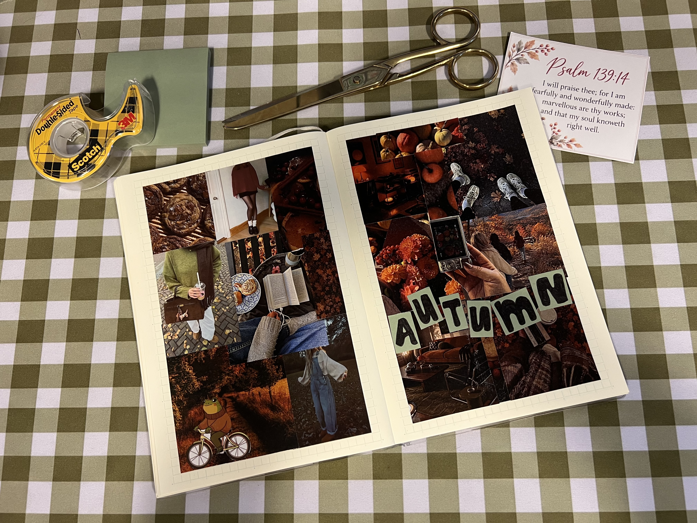

There is something so satisfying about collecting little pieces of inspiration and turning them into a page that feels like you. For this entry, I wanted to capture the colors, textures, and cozy feeling of autumn.
An autumnal vision board is a simple way to bring together photographs, colors, quotes, and little scraps of paper that remind you of the season. Think warm browns, muted oranges, dried leaves, favorite sweaters, and rainy days.

Putting the page together
Start by gathering images that fit your theme. You can print pictures to glue into your journal or print them onto sticker paper for an easy, no-mess option. Arrange everything before attaching it so you can experiment with the layout.
For the center of my page, I would use a simple title like “Fall 2026” or even just “Autumn”. Handwritten notes, tiny doodles, washi tape, and scraps of patterned paper can help fill the little spaces without overwhelming the page.
Gather Your Supplies
- Autumn-inspired pictures or magazine clippings
- Scrapbook paper and cardstock
- Washi tape and stickers
- Scissors and glue
- A favorite pen for handwritten details
Put on a cozy playlist, grab a warm drink, and enjoy making something just for yourself. ♡